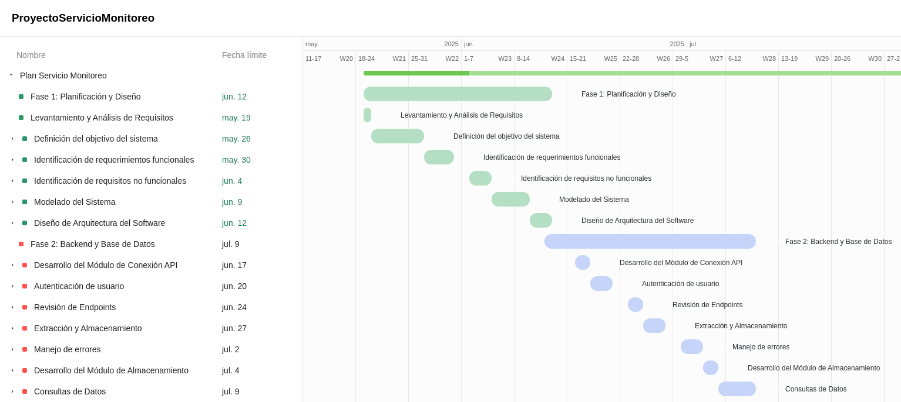
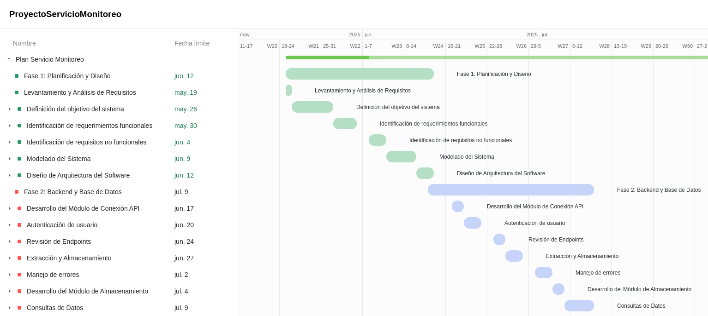

Segundo Avance del Proyecto
Definición de la estructura: Implementación de funciones en Java que permiten conectar el sistema con dispositivos o servicios de red.
Definición de la estructura: Implementación de funciones en Java que permiten conectar el sistema con dispositivos o servicios de red.
El módulo de conexión API, implementado en Java utilizando JAX-RS (Jakarta RESTful Web Services) y desplegado en WildFly.
JSON, de entrada y salida quedaría de la siguiente manera:
Diseño de estrategias de gestión de excepciones y fallos del sistema, con registros de eventos críticos y mensajes de diagnóstico.
| Tipo de Error | Descripción | Código HTTP | Respuesta | System.err |
|---|---|---|---|---|
| Validación de Entrada | La solicitud no contiene datos JSON o está vacía. | 400 Bad Request | {"error": "La petición JSON no contiene información."} | Si |
| Fallo de E/S | No se puede crear el directorio para los logs JSON. | 500 Internal Server Error | {"error": "Error del servidor al crear directorio."} | Si |
| Fallo de E/S | No se puede escribir el archivo JSON de estado. | 500 Internal Server Error | {"error": "Error interno del servidor al guardar el archivo JSON."} | No |